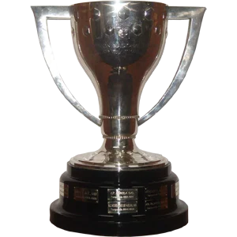
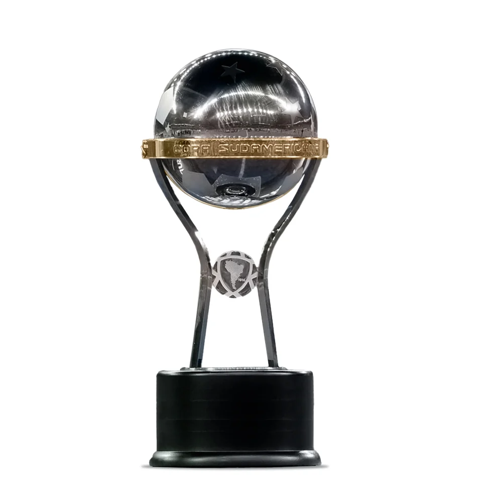
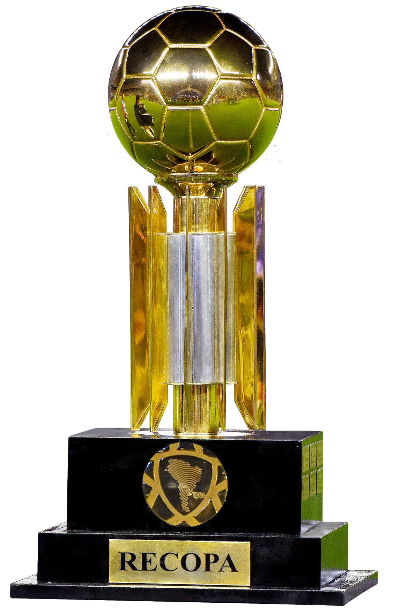

LaLiga: equipos y leyendas
Una página sobre los clubes y los jugadores que forman su historia.
LaLiga: equipos y leyendas
Una página sobre los clubes y los jugadores que forman su historia.
Leyenda y Capitán del Rayo Vallecano




Óscar Guido Trejo, apodado "El Chocota", es un futbolista argentino nacido en Santiago del Estero el 26 de abril de 1988. Juega como mediapunta y es el gran capitán, líder y referente contemporáneo del Rayo Vallecano de Madrid, club donde ha dejado una huella imborrable por su calidad, entrega y compromiso con los valores de la institución y del barrio de Vallecas.
"El Rayo para mí lo es todo, he encontrado mi lugar en el mundo."
Trejo comenzó su carrera en las categorías inferiores de Boca Juniors, equipo con el que debutó en la Primera División de Argentina y ganó el campeonato local, además de torneos internacionales como la Copa y la Recopa Sudamericana. Tras su salto a Europa, recaló en el RCD Mallorca y posteriormente pasó por clubes como el Elche CF, Sporting de Gijón y el Toulouse FC en Francia. Sin embargo, su historia de amor futbolístico se forjó en Vallecas.
En el Rayo Vallecano ha vivido diferentes etapas, consolidándose como el cerebro y motor ofensivo del equipo. Fue una pieza fundamental en el campeonato de Segunda División de 2018 y el posterior ascenso, así como en el histórico recorrido del Rayo en la Copa del Rey durante la temporada 2021/2022, donde alcanzaron las semifinales. Trejo destaca por su exquisita visión de juego, su capacidad para dar el último pase y su conexión única con la grada, siendo un ejemplo de profesionalidad y sentimiento por los colores franjirrojos.